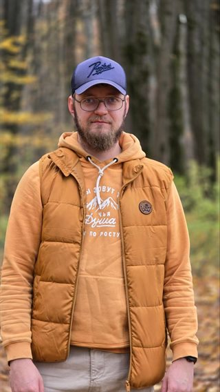

Дмитрий Сидоровхозяин Фроси
Трёхмесячную Фросю в первой клинике признали здоровой, но вскоре мы заметили, что ей трудно ходить в туалет. В другой клинике обнаружили врождённую патологию и дали тяжёлый прогноз: шансы после операции — 50 на 50. При этом хирург признался, что ни разу не проводил такую операцию, и предложил усыпить Фросю. Мы не хотели сдаваться.
По совету знакомых мы позвонили Владиславу, он без малейших колебаний сказал, что ждёт нас на приём. Мы поехали из Тулы в Люберцы. Доктор осмотрел Фросю и подробно объяснил, как пройдут операция и восстановление. Нам стало спокойнее решиться на лечение.
Сложная операция длилась несколько часов: уже начавшийся некроз удалось полностью удалить. Мы получили рекомендации по уходу, а во время восстановления Владислав консультировал нас удалённо.
Теперь Фрося снова беззаботно играет. Трудно поверить, через что она прошла. Мы очень благодарны доктору за помощь.
Теперь — снова играть.